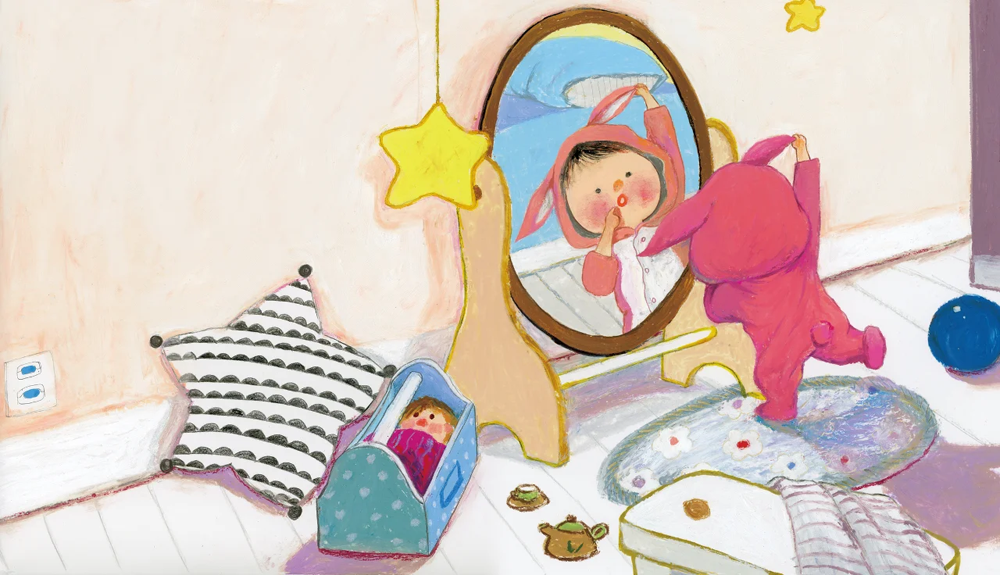

这类儿童普遍缺乏对他人心理状态的感知能力，即“心理理论”发展不足，无法准确理解他人的情绪、意图、信念和需求。比如难以分辨他人的喜怒哀乐，对别人的求助信号无反应；同时也不懂得社交中的隐性规则，如交流时需保持适当距离、轮流发言、根据场合调整语气等，常出现不合时宜的言行。
智游星途：孤独症儿童社会交往数智互动游戏先行者
关于我们
我们是来自沈阳化工大学社会工作研二的学生，致力于通过数智赋能的平台训练，提升孤独症儿童社会交往能力。希望我们做出的小小举动，能够真正为孩子们带来改变。
社会交往
孤独症儿童的社会交往问题是其核心障碍之一，主要表现为社会认知、社交沟通、互动行为等多维度的发展滞后，且个体差异较大，核心问题可概括为以下四大类：
1. 社会认知缺失，难以理解社交规则
2. 沟通能力薄弱，缺乏有效互动
沟通障碍体现在语言沟通和非语言沟通两方面。语言上，部分儿童存在语言发育迟缓甚至无语言，有语言能力的儿童也常出现“功能性语言缺失”，如只会机械重复他人话语（鹦鹉学舌）、语言表达缺乏逻辑、无法发起或维持对话；非语言沟通上，他们很少使用眼神交流、手势、表情等辅助沟通方式，回避与人对视，也难以通过他人的肢体语言获取信息。
3. 社交动机不足，互动方式刻板
多数孤独症儿童对社交活动缺乏兴趣，更倾向于独处或沉浸在自己的世界中，主动发起社交的行为极少。即使有社交意愿，互动方式也较为刻板单一，比如仅围绕自己感兴趣的话题反复讲述，不顾及对方反应；或通过拉扯、拍打等不当行为表达社交需求，难以进行双向、灵活的互动。
4. 难以建立稳定关系，应对变化能力差
他们难以理解友谊的含义，无法建立和维持稳定的同伴关系，在集体环境中常处于孤立状态，不会主动参与集体游戏或合作活动。同时，对社交场景的变化极度敏感，一旦熟悉的社交流程被打破，容易出现焦虑、烦躁甚至情绪爆发，进一步影响社交互动的开展。
您可以让孩子使用我们的游戏，在趣味中学习训练。同时我们也设置了使用时限，以保护孩子们的眼睛。

游戏介绍
1. 情景模拟
儿童能够熟悉不同的情景，如医院、公园、学校、超市，以便在生活中更好地与人交往。
2. 多阶段社交
轻松学习六阶段社交课程，在课余时间巩固进步。
3. 趣味益智比拼
以闯关的游戏模式进行视觉训练。
联系我们
团队：刘怡婷 赵林琦 吴欣蕾
邮箱：moon1228@foxmail.com
电话：17702452235